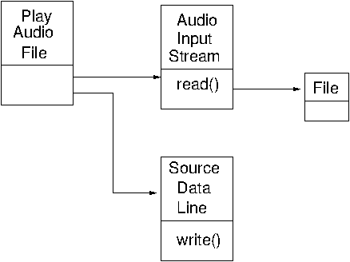
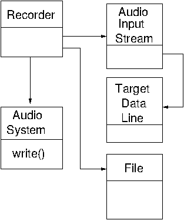
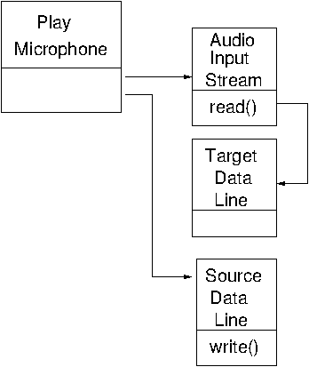

This chapter covers the essentials of programming sampled data using the Java Sound API
Java Sound has been around since early days of Java. It deals with both sampled and MIDI data. There are many resources available for Java Sound:
javax.sound.sampled.
AudioSystem class is the entry point for all
sampled audio classes.
AudioFormat class specifies information about the
format, such as sampling rate.
AudioInputStream class supplies an input stream
from the target line of a mixer
Mixer class represents an audio device
SourceDataLine class represents an input line
to a device
TargetDataLine class represents an output line
from a device
Each device is represented by a Mixer object.
Ask the AudioSystem for a list of these.
Each mixer has a set of target (output) lines and source
(input lines). Query each mixer about these separately.
The program is DeviceInfo.java:
A part of the output on my system is
Mixers:
PulseAudio Mixer, version 0.02
Source lines
interface SourceDataLine supporting 42 audio formats, and buffers of 0 to 1000000 bytes
interface Clip supporting 42 audio formats, and buffers of 0 to 1000000 bytes
Target lines
interface TargetDataLine supporting 42 audio formats, and buffers of 0 to 1000000 bytes
default [default], version 1.0.24
Source lines
interface SourceDataLine supporting 512 audio formats, and buffers of at least 32 bytes
interface Clip supporting 512 audio formats, and buffers of at least 32 bytes
Target lines
interface TargetDataLine supporting 512 audio formats, and buffers of at least 32 bytes
PCH [plughw:0,0], version 1.0.24
Source lines
interface SourceDataLine supporting 24 audio formats, and buffers of at least 32 bytes
interface Clip supporting 24 audio formats, and buffers of at least 32 bytes
Target lines
interface TargetDataLine supporting 24 audio formats, and buffers of at least 32 bytes
NVidia [plughw:1,3], version 1.0.24
Source lines
interface SourceDataLine supporting 96 audio formats, and buffers of at least 32 bytes
interface Clip supporting 96 audio formats, and buffers of at least 32 bytes
Target lines
NVidia [plughw:1,7], version 1.0.24
Source lines
interface SourceDataLine supporting 96 audio formats, and buffers of at least 32 bytes
interface Clip supporting 96 audio formats, and buffers of at least 32 bytes
Target lines
NVidia [plughw:1,8], version 1.0.24
Source lines
interface SourceDataLine supporting 96 audio formats, and buffers of at least 32 bytes
interface Clip supporting 96 audio formats, and buffers of at least 32 bytes
Target lines
This shows both PulseAudio and ALSA mixers. Further queries could show what the supported formats are, for example.
To play from a file, appropriate objects must be created for reading from the file and for writing to the output device. These are
AudioInputStream is requested from the
AudioSystem. It is created with the filename as
parameter.
AudioFormat object to specify
parameters for the dataline
DataLine.Info for a source dataline with
the audion format
AudioSystem which
will handle the DataLine.Info
Following these steps, data can then be read from the input stream and written
to the dataline.
The UML class diagram for the relevant classes is

Most of the work to do this is in preparation of an audio input stream.
Once that is done the method write of AudioSystem
will copy input from the audio input stream to the output file.
To prepare the audio input stream:
AudioFormat object describing the parameters
of the input
TargetDataLine.
So create a DataLine.Info for a target dataline.
AudioSystem for a line satisfying the information
AudioInputStream
The output is just a Java File.
Then use the AudioSystem function write()
to copy the stream to the file.
The UML class diagram is

The program is:
This is a combination of the previous two programs. An AudioInputStream
is prepared for reading from the microphone. A SourceDataLine is
prepared for writing to the speaker. The data is copied from the first to the second
by reading from the audio input stream and writing to the source data line.
The UML class diagram is

The program is:
The first program in this chapter showed a list of mixer devices and their attributes. How does Java get this information? In this section we look at JDK 1.7 - OpenJDK will probably be similar. You will need the Java source from Oracle to track through this. Alternatively, move on...
The file jre/lib/resources.jar contains a list of resources used by the
JRE runtime. This is a zip file, and contains the file
META-INF/services/javax.sound.sampled.spi.MixerProvider.
On my system the contents of this file are
# last mixer is default mixer
com.sun.media.sound.PortMixerProvider
com.sun.media.sound.DirectAudioDeviceProvider
The class com.sun.media.sound.PortMixerProvider is in
the file java/media/src/share/native/com/sun/media/sound/PortMixerProvider.java
on my system. It extends MixerProvider and implements methods such as
Mixer.Info[] getMixerInfo. This class stores the device information.
The bulk of the work done done by this class is actually performed by native methods in the
C file java/media/src/share/native/com/sun/media/sound/PortMixerProvider.c
which implements the two methods nGetNumDevices and
nNewPortMixerInfo used by the PortMixerProvider class.
Unfortunately, there's ot much joy to be found in this C file, as it just makes calls
to the C functions PORT_GetPortMixerCount and
PORT_GetPortMixerDescription.
There are three files containing these functions
java/media/src/windows/native/com/sun/media/sound/PLATFORM_API_WinOS_Ports.c
java/media/src/solaris/native/com/sun/media/sound/PLATFORM_API_SolarisOS_Ports.c
java/media/src/solaris/native/com/sun/media/sound/PLATFORM_API_LinuxOS_ALSA_Ports.c
In the file PLATFORM_API_LinuxOS_ALSA_Ports.c you will see the
function calls to ALSA as described in the ALSA chapter.
These calls fill in information about the ALSA devices for use by JavaSound.
The Java Sound API is well documented. We have shown four simple programs here, but more complex ones are possible. The link to the underlying sound system is briefly discussed.